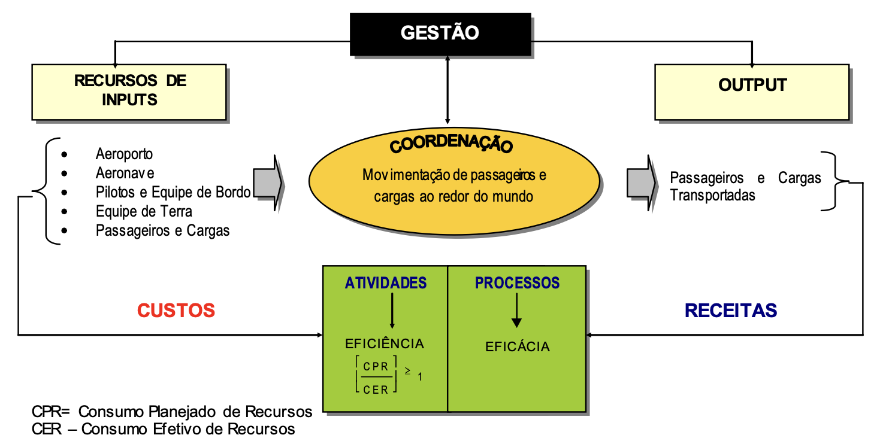

A viabilidade econômica dos SAF’s no mercado de aviação
The economic viability of SAFs in the aviation market
Victória Maria Santos Carvalho de ALMEIDA1; João Victor Alberto CANCISSÚ2; Gabrielle Ribeiro SILVA3; Mirian de Fátima Sousa ROCHA4
1 Universidade Federal do Maranhão/Ciência e tecnologia – victoria.msca@discente.ufma.br
2 Universidade Federal do Maranhão/Ciência e tecnologia – jva.cancissu@discente.ufma.br
3 Universidade Federal do Maranhão/Ciência e tecnologia – ribeiro.gabrielle@discente.ufma.br
4 Universidade Federal do Maranhão/Ciência e tecnologia – mirian.rocha@ufma.br
RESUMO
Este artigo propõe trazer uma abordagem exploratória sobre o quão viável é o mercado dos combustíveis sustentáveis de aviação (SAF’s), para assim criar um referencial de como esta indústria se encontra na atual conjuntura e para onde seguir. Nesta abordagem, partiremos da análise de três cenários do mercado, a matéria-prima, a cadeia produtiva e as tecnologias no usuário final, a partir de investigação de natureza bibliográfica de dados de empresas e jornais sobre cada setor. Neste aspecto, os custos agregados ao processo produtivo do SAF e da ausência de familiaridade com as novas tecnologias tornam-se um empecilho para a evolução deste crescente mercado. Assim, o caminho mais positivo para a transição de matriz energética das aeronaves é a adição progressiva de combustível sustentável nos aviões, permitindo a evolução da indústria junto à demanda.
Palavras-chave: aviação; combustíveis sustentáveis; viabilidade econômica.
ABSTRACT
This article proposes an exploratory approach to assess the viability of the sustainable aviation fuel (SAF) market, creating a reference point for understanding the current state of the industry and its future directions. This approach will begin with an analysis of three market scenarios: raw materials, the production chain, and end-user technologies, based on a bibliographic investigation of data from companies and newspapers in each sector. In this context, the costs associated with the SAF production process and the lack of familiarity with new technologies become obstacles to the evolution of this growing market. Therefore, the most positive path for the transition to sustainable aviation fuel is the gradual incorporation of SAF into airplanes, allowing the industry to evolve alongside demand.
Keywords: aviation; sustainable fuels; economic viability.
Introdução
O termo SAF (Sustainable Aviation Fuel) refere-se aos combustíveis aeronáuticos de origem orgânica, produzidos a partir de fontes como plantas, óleos e gorduras animais e vegetais. De tal modo, esses combustíveis têm o potencial de reduzir significativamente a emissão de gases estufa dos voos em comparação com os combustíveis convencionais.
O mercado da aviação é um dos maiores consumidores de combustíveis fósseis, responsável por 2% das emissões de gases do efeito estufa no mundo em 2020, segundo dados do WRI (World Resources Institute). Desde o início dos primeiros voos comerciais em 1914 com a St. Petersburg–Tampa Airboat Line (Michaels, 2012), até os dias atuais, a aviação depende de recursos fósseis para manter suas operações regulares, sem a existência de alternativas viáveis para este modelo de negócios.
Embora o uso de baterias elétricas, como as utilizadas em automóveis, seja uma solução promissora, atualmente é inviável para aeronaves, devido ao peso elevado e ao longo tempo de recarga, o que torna a operação lenta, cara e pouco prática para aeronaves que precisam pousar e decolar rapidamente em cada parada.
Diante disso, pesquisas envolvendo novos combustíveis sustentáveis têm ganhado força na indústria, oferecendo uma implementação mais viável em comparação às aeronaves elétricas, exigindo apenas a substituição dos motores para uma nova modalidade de operação. Além disso, técnicas que aproximam a estrutura química desses biocombustíveis aos derivados do petróleo já estão se tornando acessíveis e compreendidas pela indústria, com processos semelhantes aos de produção de biodiesel (Gonçalves et al., 2011).
Assim, deve-se observar a necessidade de uma economia verde que reduza os impactos das emissões de gases e suporte o crescimento econômico desse mercado, fazendo necessário um crescimento verde junto a essa economia (Abramovay, 2012).
Diante desse cenário, companhias aéreas, comprometidas a descarbonizar suas rotas, estabeleceram metas progressivas de redução das emissões. A iniciativa ReFuelEU da União Europeia propõe aumentar a oferta dos SAF e reduzir o uso de combustíveis fósseis. Empresas como a British Airways já começaram a implementar essa redução por conta própria, aumentando anualmente a porcentagem de SAF em cada voo.
Assim, é imperativo que as companhias aéreas brasileiras invistam em estratégias que promovam a sustentabilidade e minimizem o impacto ambiental, como os SAFs. Um dos principais desafios do setor no século XXI será equilibrar o aumento da demanda por transporte aéreo com a necessidade de reduzir as emissões de CO₂.
Portanto, a pesquisa sobre a viabilidade econômica dos combustíveis sustentáveis no mercado de aviação justifica-se pela necessidade urgente de encontrar soluções para mitigar as mudanças climáticas. Devido ao volume e ao crescimento desse mercado, a mudança de fonte energética para as aeronaves é um desafio, mas, com as soluções apresentadas anteriormente, é possível vislumbrar um futuro ecologicamente correto.
Entretanto, essas mudanças afetarão toda a cadeia econômica da aviação, impactando outras indústrias que dela dependem. Isso exige uma análise econômica e mercadológica da viabilidade dos novos combustíveis sustentáveis no setor.
Materiais e Métodos
Para análise metodológica, este artigo terá uma natureza básica, visando gerar conhecimento sem aplicação prática no cenário estudado. Quanto aos objetivos, seguirá uma pesquisa exploratória, buscando maior familiaridade com o assunto (Oliveira, 2004).
Este estudo será dividido em 5 partes. As 3 primeiras etapas da pesquisa consistiram na coleta de informações do cenário do mercado global, com ênfase no mercado aeronáutico brasileiro, sobre os conhecimentos já existentes que se encontram difusos, buscando aglomerar estas informações para a criação de um referencial teórico para o desenvolvimento dessa indústria no Brasil. Os cenários a serem construídos serão:
O processo produtivo e coleta da matéria-prima que dará origem ao SAF;
A construção do sistema de processamento destes recursos e sistemas logísticos entre produtor, indústria e consumidor final;
A atualização de tecnologias para se utilizar o SAF no consumidor final;
Cada uma dessas apresenta um cenário necessário para que o SAF possa ser viabilizado como combustível competitivo no mercado mundial. A quarta etapa será uma análise de dados econômicos dos cenários explorados nas etapas anteriores, com dados de pesquisas de custos específicos e maturidade das tecnologias e processos revelados nestes cenários. Enquanto a quinta etapa será a conclusão da pesquisa.
Qualidade da matéria-prima
Na atualidade, os combustíveis à base de petróleo e materiais relacionados são centrais para as economias de países desenvolvidos e em desenvolvimento ao redor do mundo. No setor da aviação, consome-se cerca de 390 bilhões de litros de querosene de aviação anualmente, um derivado direto do petróleo (Zaparolli, 2022). Este fato evidencia o uso predominante de combustíveis fósseis em larga escala em aeronaves.
Contudo, devido ao aumento constante dos preços do petróleo, um recurso finito cuja disponibilidade está prevista para diminuir nos próximos anos (Ahmann; Dorgan, 2007 apud Henry, 2010), o uso do combustível sustentável está sendo alvo de um constante interesse mundial. Além disso, o impacto ambiental, especialmente o aquecimento global associado ao uso desses combustíveis, impulsiona a necessidade de alternativas mais sustentáveis. A aviação, sendo uma das principais fontes de emissões de dióxido de carbono, contribui com aproximadamente 5% dessas emissões, segundo a BBC News Brasil. Dentro deste contexto, os combustíveis sustentáveis de aviação (SAF’s) emergem como uma solução promissora.
Os SAFs, em comparação com combustíveis fósseis como o querosene de aviação, têm o potencial de reduzir significativamente as emissões de carbono. Uma matéria-prima viável para SAFs é o óleo vegetal, devido à sua abundância e capacidade de ser transformado em biocombustível (Pinho, 2023). No entanto, para garantir a produção em larga escala, é essencial verificar a disponibilidade e viabilidade das matérias-primas. A produção de biocombustíveis em alta escala depende da abundância das matérias-primas, da eficiência dos processos de conversão e da infraestrutura de logística e distribuição (Zaparolli, 2022).
O Brasil apresenta um cenário promissor para a produção de SAF’s, devido ao seu vasto potencial de produção de biocombustíveis. Um estudo conduzido pela Roundtable on Sustainable Biomaterials (RSB) em parceria com a Agroicone e a Universidade Estadual de Campinas (Unicamp) revelou que o país poderia produzir até 9 bilhões de litros de SAF’s por ano, utilizando matérias-primas residuais como bagaço e palha de cana-de-açúcar, óleo de cozinha usado, sebo bovino, resíduos de madeira e gases de combustão de refinarias de aço (Zaparolli, 2022). Essa capacidade coloca o Brasil em uma posição estratégica para contribuir significativamente para a descarbonização da aviação global.
No entanto, a produção de SAFs em larga escala não depende apenas da disponibilidade de matérias-primas, mas também da eficiência dos processos produtivos e da infraestrutura. No Brasil, a rota de produção mais promissora utiliza resíduos de cana-de-açúcar, com disponibilidade estimada em 61 milhões de toneladas por ano. Esse volume pode ser processado por tecnologias como a conversão de álcool (Alcohol-to-Jet, ATJ) e a gaseificação de biomassa (Fischer-Tropsch, FT), resultando em uma capacidade de 7,2 bilhões de litros anuais, suficiente para atender 90% da demanda nacional de combustível de aviação (Zaparolli, 2022).
Além dos resíduos, o Brasil possui uma vasta gama de matérias-primas adicionais que podem ser exploradas para a produção de SAFs, incluindo plantas como palma, macaúba, soja e milho. A combinação dessas matérias-primas, utilizando apenas áreas já antropizadas ou degradadas, oferece uma oportunidade única para expandir a produção de biocombustíveis sem comprometer a segurança alimentar ou causar desmatamento (Walter et al., 2021).
A viabilidade econômica da produção de SAF’s também é uma preocupação central. Atualmente, o custo do SAF é pelo menos duas vezes superior ao do querosene fóssil, o que limita sua competitividade no mercado (Loomis, 2022 apud Zaparolli, 2022). No entanto, espera-se que, com o aumento da escala de produção e a organização das cadeias produtivas, os custos possam ser reduzidos, tornando o SAF uma opção mais viável economicamente.
Em resumo, enquanto a produção de matéria-prima para combustíveis sustentáveis em alta escala é tecnicamente viável e o Brasil possui as condições necessárias para se destacar nesse setor, o sucesso a longo prazo dependerá de um conjunto de políticas públicas, investimentos em infraestrutura e avanços tecnológicos que permitam a redução de custos e a expansão da produção. A criação de uma legislação regulatória clara e incentivos para o desenvolvimento de biorrefinarias será crucial para que o Brasil possa se tornar um líder global na produção de SAF’s e contribuir para a descarbonização da aviação.
Desenvolvimento da cadeia produtiva
No cenário do novo mercado aeronáutico, o custo do combustível tem forte relação com a cadeia produtiva e a disponibilidade no mercado. Assim, a criação de novos processos será algo necessário para aproximar os custos do litro do SAF ao litro do querosene fóssil.
Segundo um artigo na revista militar de ciência e tecnologia (Gonçalves et al, 2011), a produção de combustíveis sustentáveis é semelhante à do biodiesel em matéria-prima e estrutura de produção. Com a adição de processos específicos para SAFs, a estrutura se aproxima do querosene de aviação, permitindo o aproveitamento de plantas fabris já existentes para produzir este biocombustível.
Portanto, os SAF’s podem aproveitar de uma infraestrutura já existente. O Brasil, além do largo potencial para a produção da matéria-prima, como discorrido anteriormente, já conta com uma ampla rede de refinarias de biocombustíveis em todo o Brasil, que segundo a Agência GOV (2024) produziram juntas 43 bilhões de litros de diversos tipos de combustíveis sustentáveis. Estes valores, segundo a EPE (Empresa de Pesquisa Energética), tornam o Brasil um dos maiores produtores mundiais do setor de biocombustíveis, se encontrando em segundo lugar como produtor de etanol e quarto de biodiesel.
Assim, existe a possibilidade do uso desta mesma rede de biocombustíveis para a produção de SAF, utilizando os mesmos equipamentos que já existem na atual indústria e necessitando de menos gastos com a maturação tecnológica. Entretanto, o processamento químico ainda necessita passar por aperfeiçoamento, pois mesmo utilizando os mesmos equipamentos já existentes ainda não possuem processos baratos para competir com o querosene, sendo necessário maior tempo de processamento do que outros combustíveis de origem não fóssil. A partir do trabalho de Leonardo Rosa (2023), pode-se observar diversas rotas possíveis que estão sendo estudadas para contornar este problema de eficiência e produção, como o Hefa, que é produzido a partir do processo de hidrogenação.
Com base nas pesquisas sobre as condições operacionais de reatores utilizando óleo de girassol, será possível ampliar a investigação da hidrogenação para óleos de palma, soja, algodão e oliva, considerando para isso as condições de temperatura, pressão e a proporção molar H₂/óleo, que já foram previamente otimizadas. Dessa forma, o rendimento de n-alcanos atinge seu pico em temperaturas que variam entre 300 e 420 °C, com um tempo de residência de cerca de uma hora. Assim, quanto maior a proporção de hidrogênio em relação ao óleo, maior será a produção de hidrocarbonetos. Contudo, um excesso de hidrogênio no reator pode levar a perdas de rendimento em combustíveis de cadeias mais longas e a um uso desnecessário desse gás, o que, por sua vez, reduziria a viabilidade do processo, resultando na geração de combustíveis mais leves e com valores de mercado inferiores (Gomes, 2023).
Apesar das vantagens, o Brasil enfrenta desafios na produção robusta de SAFs. A falta de um marco regulatório claro é um obstáculo, inibindo investimentos em biorrefinarias e expansão da produção. Estima-se que biorrefinarias demandem investimentos substanciais e um tempo de implementação de quatro a cinco anos. Sem regras claras sobre sistemas produtivos e a porcentagem de SAF no querosene de aviação, investidores veem esses projetos como de alto risco (Battistella, 2022).
Visto isso, estudos globais estão desenvolvendo processos mais eficientes para a produção de SAF, como os processos de fermentação da matéria-prima desenvolvidos pela AMYRIS (Gonçalves et al, 2011).
Já na questão produtiva, aborda-se a logística do processo, visto que a matéria-prima deve sair de sua origem até a indústria de refinamento e, de lá, seguir para os aeródromos e aeroportos, sendo uma das partes mais críticas da cadeia de produção do produto.
Primeiramente, o transporte da matéria-prima até as refinarias dependerá de onde se encontra a fonte primária e a indústria de preparação do SAF. Segundo a monografia de Pedro Morais (2021) o escoamento de matéria-prima até as refinarias em sua maioria, dá-se por vias rodoviárias, hidroviárias e ferroviárias pela localização dos fornecedores distante de centros urbanos, por conta de sua dependência dos veículos destes modais, o seu uso deve ser acompanhado durante todo o processo e antes de seu início. Como alternativa, existe a possibilidade de integrar as produções de matéria-prima com as usinas e refinarias em zonas industriais próximas para reduzir os gastos de transporte.
Já a transferência do combustível pronto até os aeroportos é uma questão de demanda do aeroporto que irá receber o transporte do SAF. Em aeroportos de grande volume como os aeroportos internacionais de Guarulhos e Congonhas, o recebimento do combustível se dá via oleoduto diretamente das refinarias localizadas no Vale do Paraíba, Guararema e Capuava, fazendo com que não haja necessidade de custo de estocagem na fábrica já que toda sua produção é escoada diretamente para o uso no aeroporto, segundo dados da CNT (Confederação Nacional do Transporte). Entretanto, segundo especialistas que responderam à CNT, para aeródromos de pouca movimentação, deve-se buscar alternativas diferentes, como o transporte rodoviário e ferroviário, para abastecimento de sua baixa demanda.
Atualização tecnológica das aeronaves
Voltando este cenário para as companhias aéreas, a principal preocupação delas é se suas aeronaves serão ou não compatíveis com o novo modelo de redução de emissões via SAF. Nos últimos anos toda a indústria aeronáutica busca uma demanda específica, o desejo das companhias em se tornar limpa em emissões de gases estufa, no ano de 2021, na 77° Assembleia Geral da IATA (Associação Internacional de Transporte Aéreo) foi decidido entre as quase 300 companhias aéreas filiadas um acordo de esforço coletivo para redução total das emissões até o ano de 2050, sendo como obrigação terceira o esforço das fabricantes de produzirem aeronaves e motores que possam apoiar este modelo.
Visto isso, fabricantes de diversos países estão desenvolvendo tecnologias novas ou melhorando as já existentes para esse modelo. A exemplo do esforço de fabricantes, a Embraer com seu projeto de Aeronaves Energia, que busca desenvolver aeronaves com diversas soluções para a redução de emissões, entre as quais está uma aeronave híbrida de SAF e baterias elétricas que deverá entrar em operação até 2035 (Embraer, 2023).
Todavia, projetos para aeronaves mais sustentáveis já é algo atual, como as aeronaves Phenom 300 E e Praetor 600, ambos jatos de pequeno porte da fabricante Embraer, que cumpriram com êxito operações de voo com 100% de uso dos SAF’s, mostrando que tecnologias como está já estão disponíveis atualmente. Outra tecnologia já atual são os motores Trent 1000, da fabricante Rolls-Royce, que em parceria com a Virgin Atlantic conseguiram operar o primeiro voo transatlântico abastecido totalmente com SAF(Machado,2023).
Contudo, nem todas as companhias aéreas têm aeronaves que operam totalmente com SAF; a maioria só permite de 20 a 50% de SAF misturado ao querosene de aviação, conforme a KLM. A semelhança das moléculas dos SAFs com o querosene permite que a maioria das aeronaves atuais opere com a mistura, mas diferenças residuais na matéria-prima ou processamento podem criar gomas nos motores, limitando a quantidade de SAF que pode ser usado (Leonardo Rosa, 2023; Gonçalves et al, 2011).
Dito isso, existem diversas formas de se atualizar a frota de aeronaves de uma companhia comercial. Um dos métodos aquisitivos mais usados pelas companhias aéreas é o Leasing, definido pela legislação brasileira (Lei n° 6.099), como um acordo de duas partes em que um é o dono do bem enquanto o outro será aquele que utilizará o bem, o uso deste sistema permite que companhias aéreas possam utilizar aeronaves sem de fato adquiri-las, tornando esta uma opção economicamente mais atrativa para grandes frotas que possuem alto custo de aquisição. Este sistema permite que uma dada companhia aérea possa substituir sua frota após um dado tempo com o término de seus contratos, permitindo que nessa troca seja possível arrendar aeronaves com maior alinhamento ao novo modelo de mercado.
Por outro lado, várias companhias aéreas e as próprias empresas de leasing adquirem diretamente as aeronaves, cabendo a elas a substituição de suas frotas. O custo de aquisição de uma aeronave do modelo B737 na época era de 32 milhões de dólares (equivalente a 48 milhões na cotação atual) , enquanto o custo de manutenção e substituição de peças podendo chegar a 15% do valor da frota (Isidro, F; Maria, A, 2000).
O objetivo dessa observação é avaliar a substituição de componentes, pois substituir toda a frota a curto prazo é inviável para empresas que possuem suas aeronaves. Existe a possibilidade de substituir motores e peças associadas, permitindo que aeronaves não preparadas para SAF possam ser adaptadas para usar mistura de querosene e SAF sem prejudicar economicamente a companhia.
Resultados e Discussão do Cenário Econômico
No início da década de 90, surgiu um novo cenário institucional com uma economia liberal e acessível aos mercados internacionais. Era necessário liberalizar o setor aéreo, pois a competitividade entre as companhias era praticamente inexistente, e elas não viam necessidade de eficiência, qualidade ou preços competitivos. Com a entrada de mais companhias estrangeiras no Brasil, as empresas locais foram obrigadas a reavaliar suas estratégias (Pereira; Godim, 2000).
A aviação exercer um importante papel na economia brasileira e mundia, pois conecta pessoas em todo o mundo na promoção do comércio e turismo. Atenta às demandas do mercado e à importância do desenvolvimento sustentável, a aviação está emprenhada em continuar a fornecer benefícios aos seus usuários, diminuindo o impacto ambiental.
Para garantir o sucesso a longo prazo, é necessário que as decisões de gestão considerem as repercussões das estratégias para assegurar recursos essenciais e suportar os fluxos de saída da empresa. Isso é fundamental para alcançar metas realistas de lucro e retorno sobre investimentos. A produção constante de resultados líquidos favoráveis, através do gerenciamento dos fluxos de entrada e saída, é central no planejamento e controle de resultados. Essas interações são simplificadas na figura 1.
Figura 1 - Visão Gestorial do Processo de Input-Transformação-Output de Operações em Serviços da Aviação Comercial.

Fonte: Pereira e Gondim (2000).
Custos diretos: combustível, depreciação de equipamento de voo, manutenção e revisões, seguro de aeronaves, tripulantes técnicos, comissários de bordo, arrendamento das aeronaves, tarifas de auxílio à navegação, tarifas aeroportuárias.
Custos indiretos: organização terrestre, serviços de bordo, organização tráfego-pax, organização tráfego-carga, despesas comerciais e de marketing, administração geral.
Receitas: passagens, excesso de bagagem, expresso, encomenda e cargas, fretamento-pax, fretamento-carga, rede postal noturna, suplementação tarifárias.
O sistema operacional utiliza um terminal central para otimizar o agrupamento de passageiros e, assim, alcançar taxas de lotação mais elevadas. No entanto, isso pode resultar em os passageiros percorreram maiores distâncias e gastarem mais tempo viajando do que em opções sem escalas. As razões para que aceitem isso incluem a maior frequência de voos possibilitada por um sistema centralizado e a promessa de transporte gratuito, oferecida através de programas de fidelidade que as companhias aéreas implementaram, com o intuito de maximizar a receita que pode ser gerada a partir dos serviços, por meio da oferta de “fatias” do serviço a diferentes preços e com diversas restrições.(Pereira; Godim, 2000).
Para uma visão econômica da infraestrutura aeronáutica, seguir-se-ão tópicos de acordo com cada capítulo anterior apresentado, começando pela visão de mercado da produção e coleta de matéria-prima. Como trabalhado anteriormente, os óleos vegetais são um dos focos de investimento para a produção do SAF, pela sua facilidade em conversão para biocombustíveis (Pinho, 2023) além da possibilidade de se trabalhar com resíduos orgânicos rurais e urbanos, como resíduos florestais e de produção agrícola, óleo de cozinha e resíduos alimentícios (Silva, 2023). Assim, segundo pesquisa da Embrapa, o valor de mercado para importação dos óleos vegetais nas últimas décadas ficou em 1,47 US$/kg para óleo de mamona, 1,00 US$/kg para o óleo de girassol, 0,80 centavos de dólar por quilo para óleo de soja e 0,47 para o de milho (Santos et al, 2022), sendo estes os principais a serem usados na produção dos SAF´s.
Assim, em comparação ao valor do petróleo bruto que no mesmo ano foi de 101 dólares por barril (Lira, 2023) que equivale a 0,64 centavos de dólar por quilo, e usando um estudo de aproveitamento do óleo (Quessada et al, 2010), é possível gerar a seguinte tabela:
Tabela 1 - Relação custo/aproveitamento de matéria-prima.
| MATÉRIA-PRIMA | VALOR EM KG | APROVEITAMENTO |
|---|---|---|
| Petróleo bruto | US$ 0,64 | 4% |
| Óleo de milho | US$ 0,47 | 92% |
| Óleo de soja | US$ 0,80 | 94% |
| Óleo de girassol | US$ 1,00 | 95% |
| Óleo de mamona | US$ 1,47 | 90% |
Fonte: Elaborado pelos autores.
A partir da tabela 1, é perceptível a diferença no aproveitamento dos óleos vegetais em comparação ao petróleo para querosene de aviação após processamento (Larco, 2024). O custo de extração do petróleo é mais alto que o dos óleos vegetais, tornando o cultivo uma opção de mercado positiva devido à facilidade de implementação das plantações em comparação com a construção de poços de petróleo.
Por outro lado, é necessário um olhar no custo de refino destas matérias, pois a depender do gasto na produção dos combustíveis, o produto final de SAF pode se tornar mais custoso em relação ao querosene de aviação comum. Para uma refinaria de petróleo, o custo de produção de cada barril é de US$ 1,66 (Oliveira, 2022), dividindo para o valor de cada kg, o custo do processamento sairia em 0,02 centavos de dólar, fazendo com que o custo final (sem considerar transporte e mão de obra) é de US$ 0,66. Entretanto, este valor não é apenas para o querosene de aviação,mas também para os demais derivados que representam os outros 96% da massa (Larco,2024).
Já para uma refinaria de SAF, os custos de sua implementação são semelhantes ao da construção de uma usina petrolífera, podendo custar de investimento cerca de 3,6 Bilhões de reais (equivalente a 650 milhões de dólares em cotação atual) segundo dados do Jornal do Comércio (2023). Visto isso, dentro destas refinarias ainda não há um valor específico do custo de produção dos SAF´s, devido ao curto tempo de implementação das primeiras refinarias, assim, foi dado como referência o custo de produção do litro de biodiesel, que possui semelhanças operacionais com os processos empregados nas usinas de SAF, assim, o custo da produção seria de R$ 3,92 (US$ 0,71) para o biodiesel (EPE. 2022). Levando em conta a inexperiência atual da indústria com os SAF´s, considere-se um adicional de 25% no custo de produção, elevando-o a US$ 0,89 para cada litro de SAF, que o torna 44 vezes mais caro de se produzir em comparação aos derivados de petróleo.
O último fator dessa estrutura é a atualização tecnológica das aeronaves. No primeiro caso, apenas os motores serão substituídos por modelos que aceitam o novo combustível, mas não são compatíveis com os motores antigos, cuja unidade pode custar até 18 milhões de dólares (Santos, 2019). Além disso, o custo de desenvolver um motor aeronáutico de médio porte pode chegar a 1 bilhão de dólares (NASA, 2004).
Concluindo a visão econômica, o custo de SAF para uma indústria madura no Brasil por litro pode variar de US$ 0,90 a US$ 2,40 o litro, enquanto o combustível fóssil possui hoje o valor de US$ 0,70 o litro do combustível (Barbosa, 2024)
Após a exploração das etapas de tratamento do SAF até seu usuário final pode-se visualizar os altos custos envolvidos no processo de fabricação deste combustível verde. Os valores de mercado da matéria-prima, como visto anteriormente, possui uma vantagem econômica pela matéria prima de SAF, enquanto apenas uma pequena parcela do petróleo é aproveitada para produção de combustível aeronáutico.
Todavia, quando comparado ao custo de produção, o SAF se torna pouco competitivo em relação ao querosene fóssil, criando um cenário desfavorável à sua entrada no mercado. Assim,após todo o trabalho de produção do SAF,mesmo se atingir o valor apresentado de US$ 0,90 como apontado por pesquisa do MIT, a diferença de US$ 0,20 com o querosene comum de aviação torna este combustível pouco competitivo frente ao seu concorrente, visto que para abastecimento de aeronaves a contagem do combustível é feita em toneladas, o que, para uma aeronave regional como um A320 a diferença pode chegar a alguns milhares de dólares a mais no custo de abastecimento para a companhia aérea.
Ademais, os custos de reformar a frota de aeronaves se tornarão um investimento a longo prazo para as CIAs aéreas e para os fabricantes de aeronaves e motores, que precisarão desenvolver tecnologias mais alinhadas à economia verde emergente. Além disso, os custos da criação das biorrefinarias, da troca de aeronaves e do desenvolvimento são conhecidos na indústria aeronáutica, sendo um problema o tempo necessário para ver os resultados desses investimentos.
Considerações Finais
Após a exploração dos cenários da indústria de combustível aeronáutico assim como seus custos principais, retornamos a causa primária desta pesquisa, que é a demanda global para uma solução às extensas emissões de gases estufa emitidos pelas aeronaves em operação. Desta forma, a estratégia explorada foi do uso dos SAF´s, por permitir sua implementação progressiva e a possibilidade do mercado se adaptar a esse crescimento contínuo. Portanto, mesmo com custos elevados associados a produção de SAF, o investimento em novas tecnologias e processos permitirá que esses custos, com ênfase no de produção que é o fator central do encarecimento do combustível, possam reduzir até valores competitivos e assim a mudança definitiva de matriz energética das aeronaves passar para origem vegetal sustentável.
Diante do exposto, o mercado da aviação deverá procurar inovações e investimentos em suas tecnologias e sistemas relacionados ao novo mercado de combustíveis sustentáveis para se adaptar à nova era de sustentabilidade ambiental. Tendo em vista a busca para atingir uma convivência harmônica com o planeta.
Referências
ABRAMOVAY, R. Muito Além da Economia Verde. São Paulo: Editora Abril, 2012.
AGÊNCIA NACIONAL DE AVIAÇÃO CIVIL. Combustíveis sustentáveis para a aviação.
AGÊNCIA CNT TRANSPORTE ATUAL. Saiba como funciona o abastecimento em dois dos maiores aeroportos do Brasil.
AGÊNCIA GOV/ VIA ANP. Produção de biocombustíveis cresce no Brasil e alcança recorde histórico.
BARBOSA, Mariana. Descarbonizar a aviação vai custar caro e pode reduzir em 8% a demanda no Brasil. Novacana, 2024.
EMBRAER. 2024. Disponível em: embraer.com/br/pt. Acesso em: 25/08/2024.
EMPRESA DE PESQUISA ENERGÉTICA. Investimentos e Custos Operacionais e de Manutenção no Setor de Biocombustíveis: 2023 - 2032.
EMPRESA DE PESQUISA ENERGÉTICA. Mapa Interativo dos Mandatos de Teor de Biocombustíveis Líquidos do Setor de Transportes no Mundo.
GAMBARINI, Costanza. A aviação pode se tornar sustentável um dia? BBC News Brasil, 2023.
GE, Mengpin; FRIEDRICH, Johannes; VIGNA, Leandro. 4 gráficos para entender emissões de gases de efeito estufa por país e por setor. WRI Brasil, 2020.
GOMES, Marcus. Estudo da influência da matéria-prima na produção de combustível renovável de aviação.
GONÇALVES, F ; BORGES, L; FRAGA, M. Combustíveis de Aviação: perspectivas e futuro. Revista Militar de Ciência e Tecnologia, v. 28, n. 3, p. 15-23, jul./set. 2011.
HENKES, Jairo; PÁDUA, Adailson. DESENVOLVIMENTO SUSTENTÁVEL NA AVIAÇÃO BRASILEIRA: HISTÓRICO, PRINCIPAIS AVANÇOS E DESAFIOS. R. gest. sust. ambient., Florianópolis, v. 6, n. 2, p. 534-552, jul./set. 2017.
HENRY, R. Plant Resources for Food, Fuel and Conservation. UK and USA: Earthscan, 2010.
IATA. Zero emissão líquida de carbono até 2050.
KLM. Combustível Sustentável de Aviação.
Larco. 2024. Disponível em: www.larcopetroleo.com.br/noticias/40-de-um-barril-de-petroleo-viram-diesel-e-18-gasolina-apos-o-refino. Acesso em: 30/08/2024.
LIRA, Roberto. Projeção do Departamento de Energia vê petróleo em queda em 2023 e 2024.
MACHADO, Nayara. Virgin Atlantic fará primeiro voo transatlântico usando 100% de SAF.
MICHAELS, Will. The world ’s first airline originated in Florida on New Year ’s Day 1914. IATA, 2014.
MORAIS, Pedro. Logística do escoamento da produção em biorrefinarias descentralizadas.
NASA. Reducing the Time and Cost of Testing Engines.
OLIVEIRA, Cassandra; SILVA, Dr. Metodologia e Organização do projeto de pesquisa. 2004.
OLIVEIRA, Matheus. Custos no processo de refino do petróleo: um estudo de caso da refinaria alberto pasqualini (refap).
Our planet. British Airways.
PEREIRA, Francisco; GONDIM, Arilda. Custos nas companhias de Aviação Comercial: Um Estudo Exploratório. VII Congresso Brasileiro de Custos, Recife, PE, Brasil, 2 a 4 de agosto de 2000.
PRESIDÊNCIA DA REPÚBLICA CASA CIVIL. Lei n. 6.099, de 12 de setembro de 1974.
QUESSADA, Talita; GUEDES, Carmem; BORSATO, Dionísio; GAZZONI, Bruna; GALÃO, Olívio. OBTENÇÃO DE BIODIESEL A PARTIR DE ÓLEO DE SOJA E MILHO UTILIZANDO CATALISADORES BÁSICOS E CATALISADOR ÁCIDO.
ReFuelEU Aviation initiative: Sustainable aviation fuels and the ‘fit for 55’ package. European Parliament Think Tank, 2023.
ROCHA, M. Avaliação do Ensino Superior Brasileiro e o Núcleo docente Estruturante. São Paulo: All Print, 2012.
SANTOS, Ana; FERREIRA, Priscila; LOPES, Cecília; BRAGA, Melissa; BRAGA, Natália. Estudo prospectivo de óleos vegetais. Documento 41.
SANTOS, Guilherme. Curiosidades sobre motores de aviões comerciais.
SEVERINO; Antônio. Metodologia do Trabalho Científico. São Paulo: Cortez, 2013.
WALTER, Arnaldo; SEABRA, Joaquim; ROCHA, Jansle; GUARENGHI, Marjorie; VIEIRA, Nathália; DAMAME, Desirèe; SANTOS, João. Spatially explicit assessment of the feasibility of sustainable aviation fuels production in Brazil: Results of three case studies. Energies, 2021.
ZAPAROLLI, Domingos. O desafio do setor aéreo para anular sua pegada de carbono. Revista Pesquisa FAPESP, 2022.